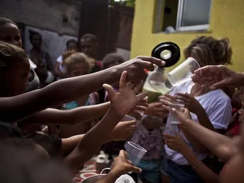

Como Doar Alimentos
Doar alimentos é uma maneira poderosa de combater a fome e promover solidariedade. Saiba como fazer sua doação de forma segura e impactante!
Por que doar alimentos?
Milhares de pessoas enfrentam insegurança alimentar todos os dias. Suas doações ajudam a fornecer refeições nutritivas para famílias necessitadas.
- Reduzir o desperdício de alimentos.
- Garantir que mais pessoas tenham acesso à nutrição básica.
- Fortalecer comunidades locais.
O que doar?

Priorize alimentos não perecíveis e em bom estado. Veja os itens mais procurados:
- Arroz e feijão.
- Macarrão e farinha.
- Açúcar e sal.
- Óleo de cozinha.
- Leite em pó.
- Conservas (sardinhas, atum).
Dica: Verifique a data de validade antes de doar.
Como doar?
- Selecione alimentos em bom estado e que estejam dentro do prazo de validade.
- Organize os itens em caixas ou sacolas para transporte seguro.
- Localize um ponto de doação confiável próximo a você (consulte nossa página "Onde Doar").
- Entregue os alimentos no local indicado ou agende a retirada, se disponível.
Você também pode organizar sua própria rota de doação de comida na nossa página principal!
Dicas de Segurança
- Certifique-se de que os alimentos estão bem armazenados e embalados.
- Prefira doar em instituições ou campanhas reconhecidas.
- Evite doações de itens perecíveis sem refrigeração adequada.